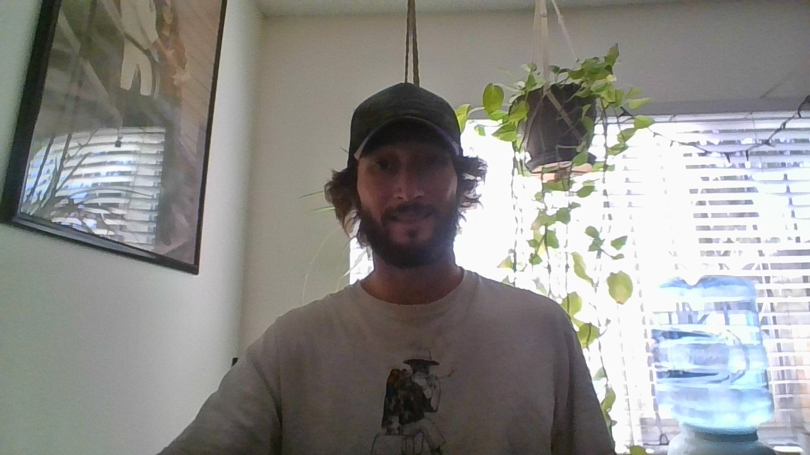

About Me
I've worked in advertising, A/V installation, test prep instruction, politics, medical records, tech support ... I even had a brief tour singing with an opera company. So, how did I end up studying web development?
Simple - I started out studying CS/EE in college, and now I've come full circle. (Well, maybe a few circles, but you get the idea.) I'm currently a student of the University of Texas Coding Bootcamp for Full Stack web development, and I can't wait to find out where I end up next.